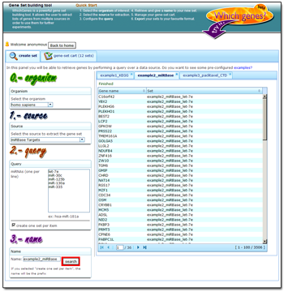
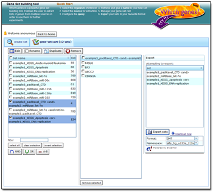

Gene Set building tool
WhichGenes is a simple, but powerful gene set building tool. It allows the user to extract lists of genes from multiple sources in order to use them for further experiments.
Quick Start
1. Select the source for extraction.
2. Configure the query.
3. Retrieve and give a name to your new set.
4. Repeat the above steps or...
5. Export your sets to your favourite format.
|
WhichGenes is an bioinformatics gene set building tool. It allows the user to create and manage custom genesets extracted from several sources. Currently, WhichGenes can extract genes from: ]]> |  |
|  |
Open-SourceWhichGenes is an open-source project. Moreover, it is intended to be extensible, specially when adding new sources to extract gene lists. DB-FreeWhichGenes is tries to avoid the usage of a local database as possible in order to always retrieve up-to-date gene lists coming directly from the third party databases (GeneCards, KEGG, AmiGO, etc.) |
In order to use WhichGenes, you first need an user name. Press in the "New user" button in the login box on the top-right of this screen.
]]>